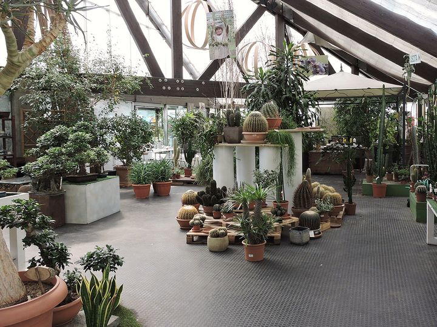
Garden
Piante da interno e da esterno, piante grasse anche rare, bonsai, vasi in terracotta, arredo per il giardino e idee regalo.
049 8791098Cosa trovate →
Garden center, giardini e vivai a Saonara, Padova
Il Garden è aperto dal lunedì pomeriggio al sabato
Lun 15–19, mar–ven 8:30–12:30 e 15–19, sab 9–12:30 e 15–19. Orari
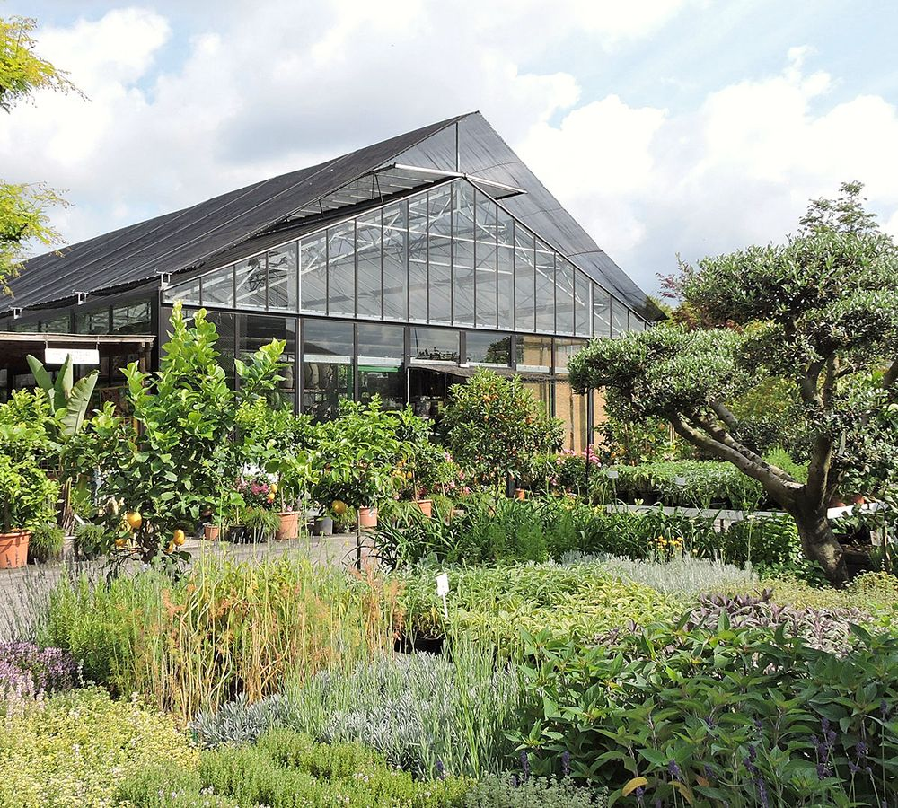

Piante da interno e da esterno, piante grasse anche rare, bonsai, vasi in terracotta, arredo per il giardino e idee regalo.
049 8791098Cosa trovate →
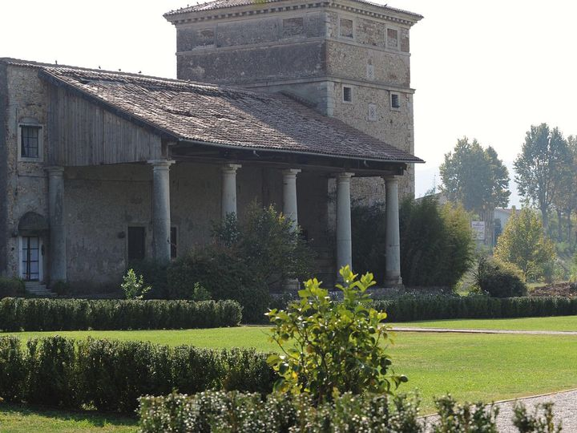
Progetto e realizzazione chiavi in mano di giardini, parchi, terrazze e verde pensile. Trapianto di esemplari, giardini storici, manutenzione.
049 8791098Chiedete un sopralluogo →
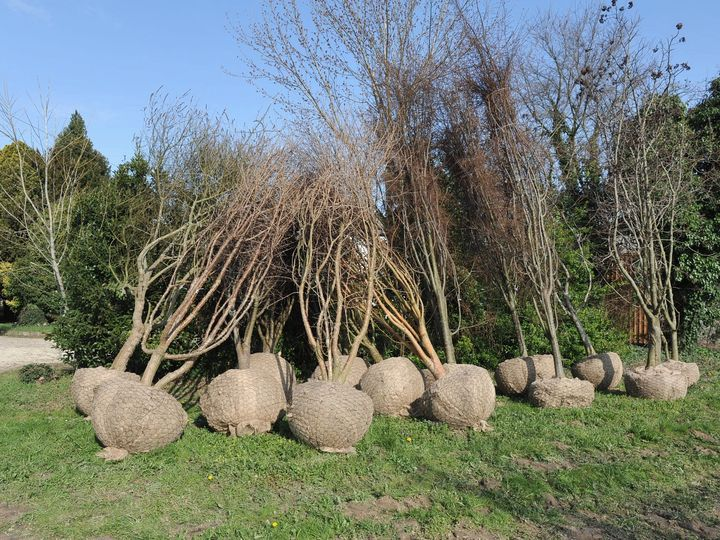
Piante ornamentali dai piccoli arbusti agli esemplari unici, in zolla o in vaso, pronte per essere spedite in tutta Italia.
049 640156Per professionisti →
Bordin Garden, via dei Vivai 6
Venite a visitarci: un luogo piacevole e immerso nel verde a due passi da Padova, uno dei primi garden center della città. Sono migliaia le proposte da scoprire.
Via dei Vivai 6, Saonara (PD)
Oppure scrivete a info@bordingarden.it
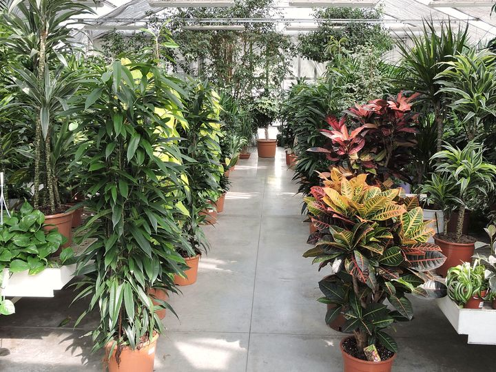
Una vasta scelta, nella serra del Garden.
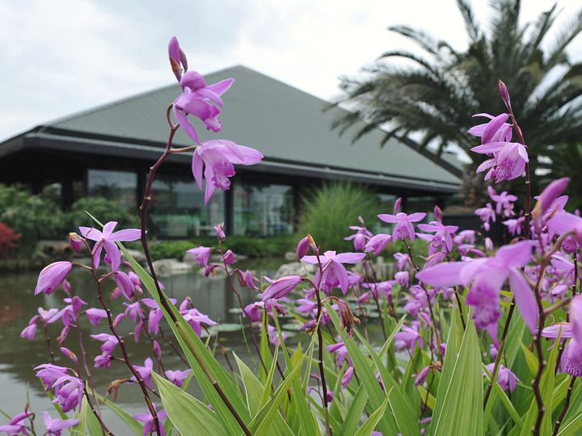
Fiori e piante per il giardino, il terrazzo e il balcone.
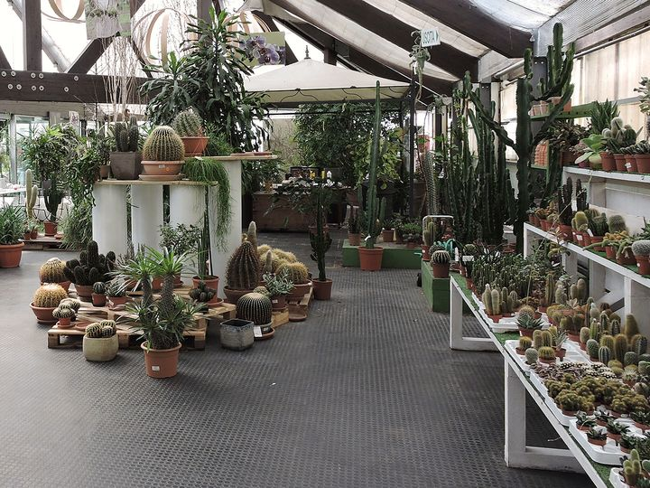
Anche rare, con i vasi in terracotta.
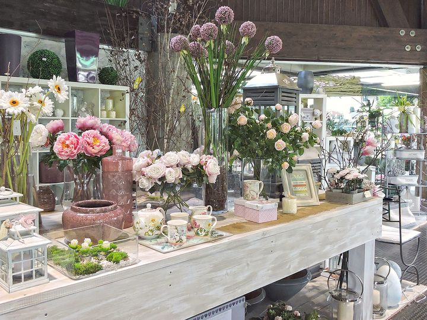
Per la casa e per gli spazi verdi.
La storia
Nel 1955 i fratelli Saverio e Alcide fondano i Vivai Piante Bordin: prima piante da frutto e rose, poi piante ornamentali di primissima qualità. Nel 1996 apre il Garden, uno dei primi garden center di Padova. Oggi in azienda lavora la terza generazione.
1955i fratelli Saverio e Alcide fondano i Vivai Piante Bordin
Giardini chiavi in mano
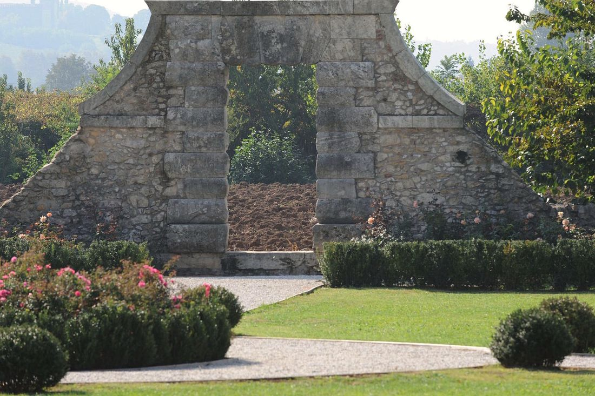
Il parco di una villa veneta: prato, siepi di bosso e rose intorno all'arco in pietra e alla barchessa con la torre colombara.
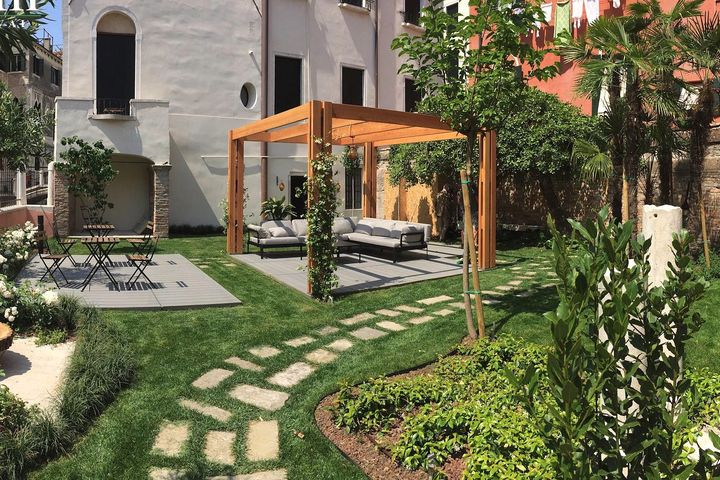
Una corte tra le case: prato, camminamento in pietra e pergola in legno.
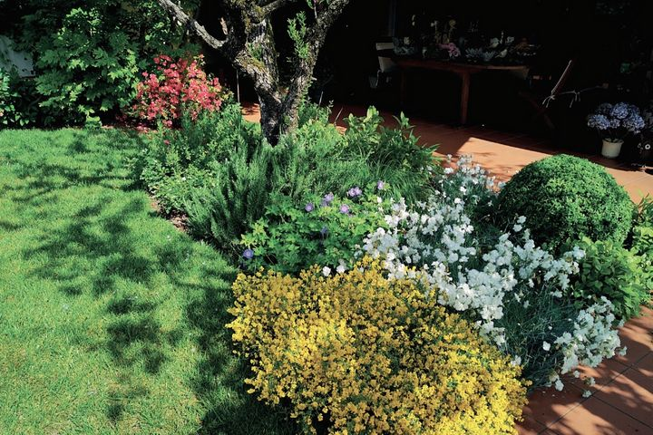
La stessa aiuola prima e dopo il nostro lavoro, dal book «I nostri giardini». Negli album ci sono le foto di cantiere dei nostri giardini.
Tutte le piante dei nostri giardini hanno un anno di garanzia d'attecchimento.Dal nostro book «I nostri giardini».
Bastano due righe e, se l'avete, una foto o un disegno dello spazio. Con la foto sul telefono fate prima su WhatsApp.
Bordin Vivai, via dei Vivai 14
Piante ornamentali dai piccoli arbusti fino a esemplari unici e di rara bellezza, dalle più comuni alle poco conosciute. Per architetti, impresari e privati.
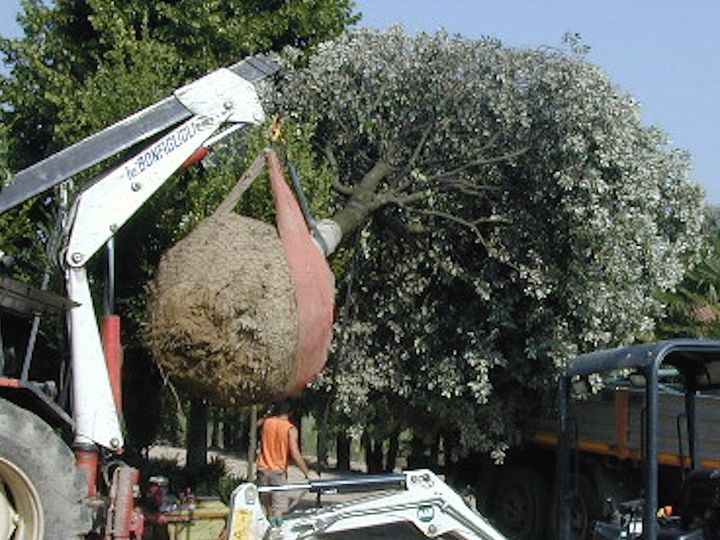
Via dei Vivai 14, Saonara (PD) · info@bordinvivai.it